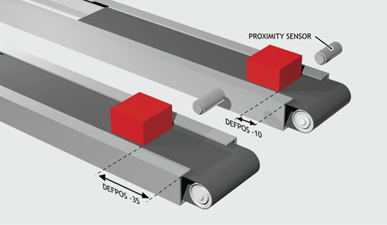
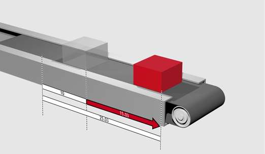
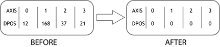

Axis Command
DEFPOS(pos1[, pos2[, pos3[, pos4...]]])
DP(pos1[, pos2[, pos3[, pos4...]]])
Defines the current position(s) as a new absolute value. The positions specified are placed in DPOS , while MPOS is adjusted to maintain the FE value. This function is completed after the next servo-cycle. DEFPOS may be used at any time, even while a move is in progress, but its normal function is to set the position values of a group of axes that are stationary.
|
pos1: |
Absolute position to set on current base axis in user units. |
|
pos2: |
Absolute position to set on the next axis in BASE array in user units. |
|
pos3: |
Absolute position to set on the next axis in BASE array in user units. |
|
... |
|
As many parameters as axes on the system may be specified.
After homing 2 axes, it is required to change the DPOS values so that the “home” positions are not zero, but some defined positions instead.

DATUM(5) AXIS(1) 'Home both axes. At the end of the DATUM
DATUM(4) AXIS(3) 'procedure, the positions will be 0, 0
WAIT IDLE AXIS(1)
WAIT IDLE AXIS(3)
BASE(1, 3) 'Set up the BASE array
DEFPOS(-10, -35) 'Define positions of axes to -10 and -35
Define the axis position to be 10, then start an absolute move, but make sure the axis has updated the position before loading the MOVEABS .

DEFPOS(10)
WAIT UNTIL OFFPOS = 0 'Ensures DEFPOS has completed
MOVEABS(25.03)
From the Motion Perfect terminal, quickly set the DPOS values of the first four axes to 0.

>>BASE(0)
>>DEFPOS(0, 0, 0, 0)
>>